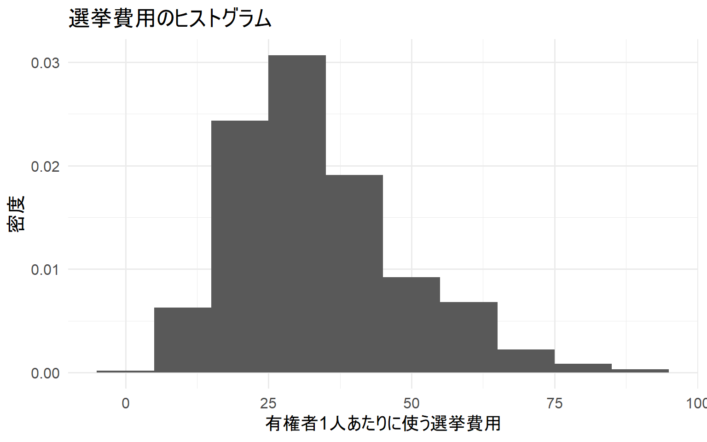
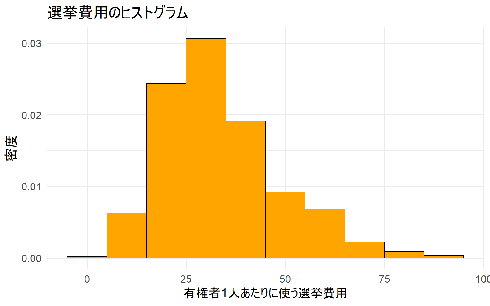
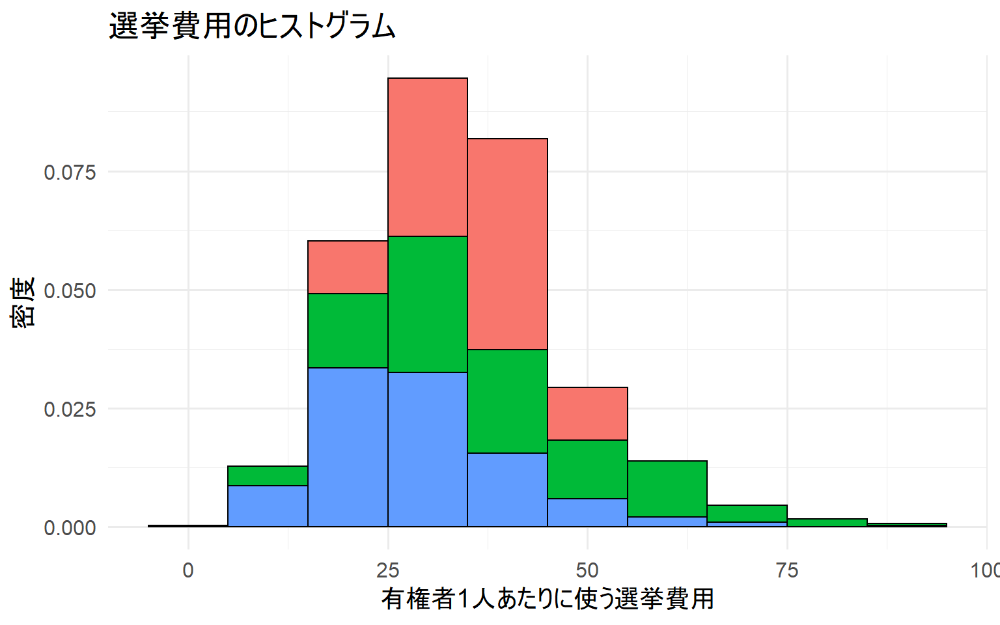
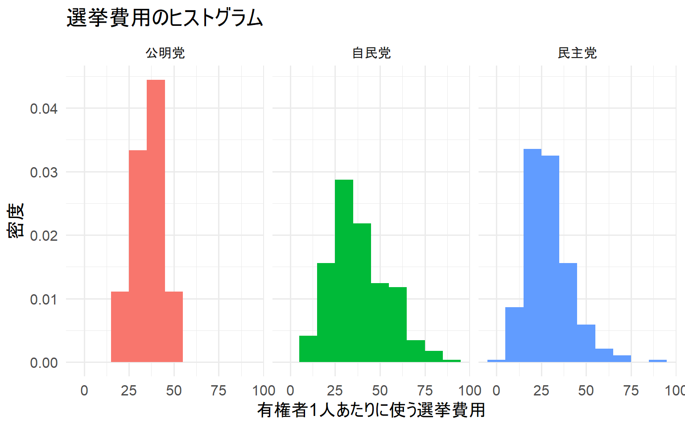
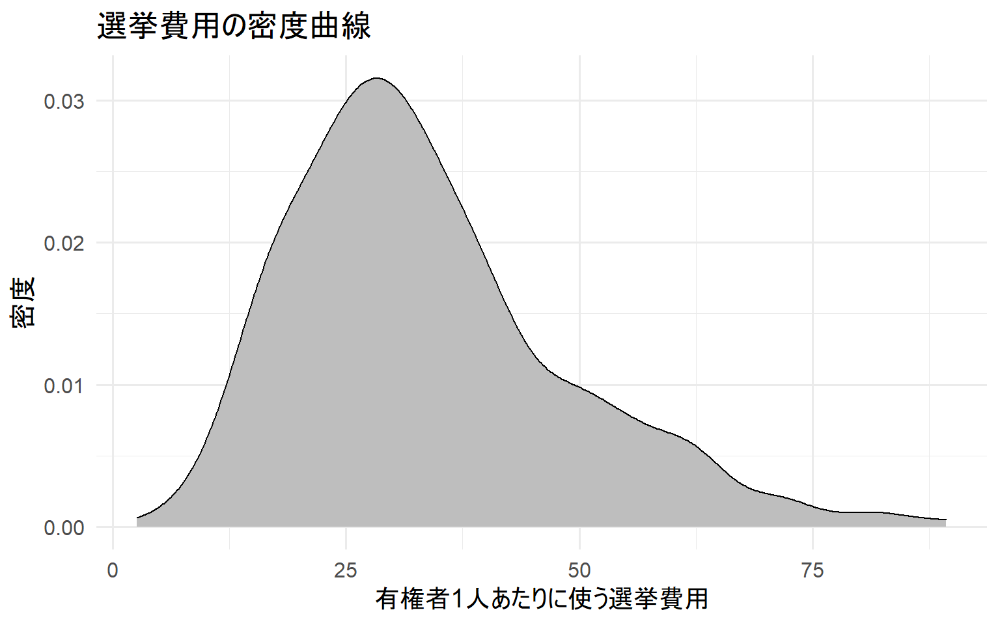
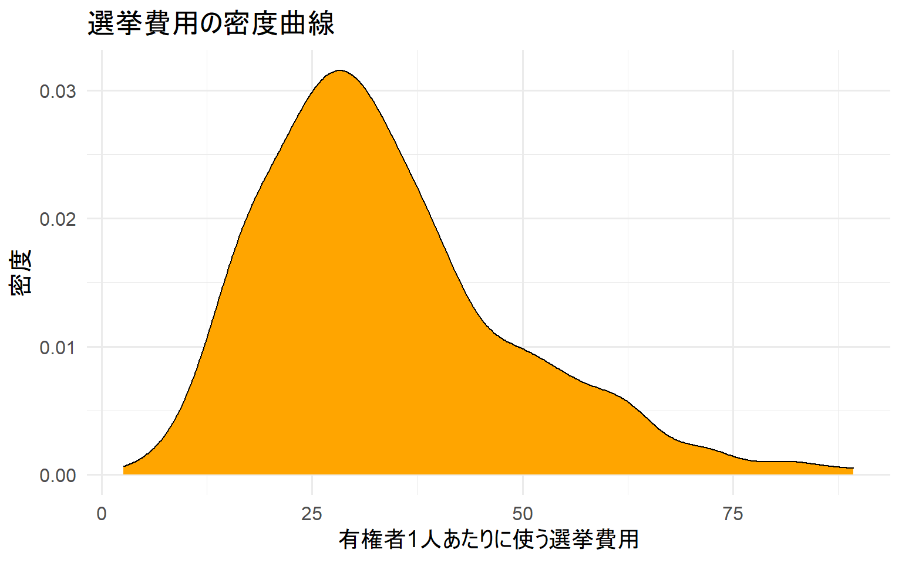
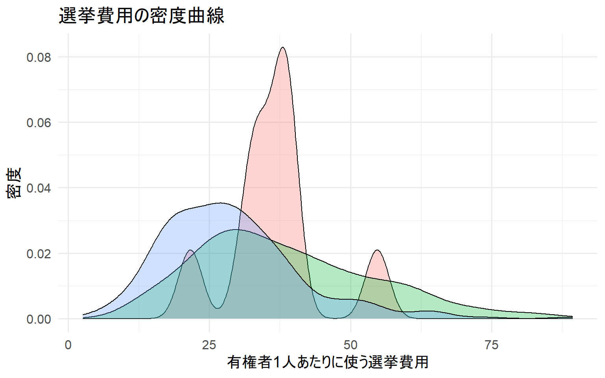
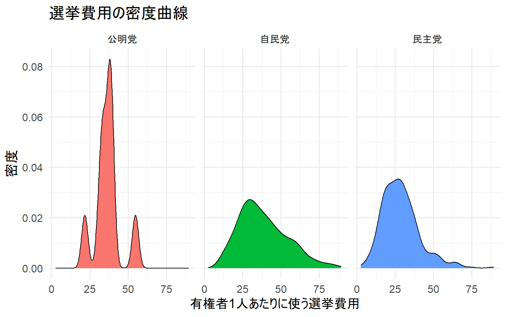
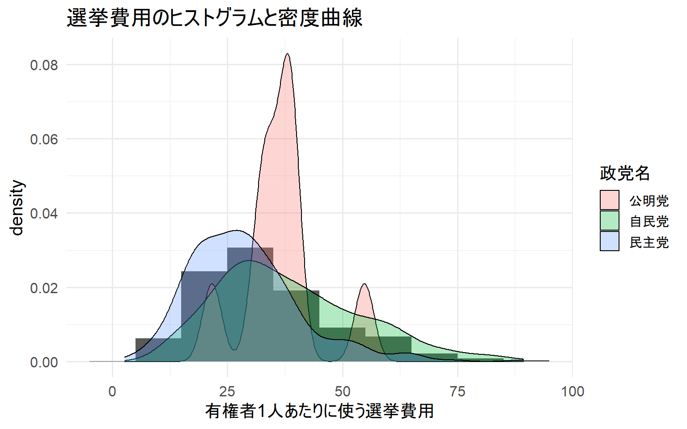

knitr::opts_chunk$set(warning = F,
message = F,
comment = "",
fig.align = "center",
fig.width = 8,
fig.height = 5)
使用するパッケージ
準備していないパッケージはinstall.packages("package_name")でインストールする。
# 使用するパッケージ
library(tidyverse) # データの整形から可視化まで
library(magrittr) # パイプ処理を使いこなすせ！
# ggplot2 の theme をあらかじめ設定しておく
theme_set(theme_minimal(base_size = 15))
データの読み込み
今回使用するのは衆院選に出馬した各候補者のデータだ。
1996年から2017年までのデータが詰まっている。
データはこちら
data <- read_csv("./data/House_of_Councilors_1996_2017.csv") # 1996年～2017年までの衆院選データ
データ内の変数名を確認する
どんな変数があるか見てみよう。
names(data)
[1] "year" "ku" "kun" "status" "name"
[6] "party" "party_code" "previous" "wl" "voteshare"
[11] "age" "nocand" "rank" "vote" "eligible"
[16] "turnout" "exp" "expm" "vs" "exppv"
[21] "smd" "party_jpn"
各変数が意味するものは以下のようになっている。
| year |
実施年 |
|
| ku |
都道府県 |
|
| kun |
区域 |
|
| status |
現職か否か |
0 = 新人・元, 1 = 現職 |
| name |
名前 |
|
| party |
所属政党 |
ローマ字での略語 |
| party_code |
所属政党 |
数字で通し番号 |
| previous |
当選回数 |
|
| wl |
当落結果 |
0 = 落選, 1 = 当選, 2 = 復活当選 |
| voteshare |
得票率 |
単位: % |
| age |
年齢 |
|
| nocand |
候補者数 |
|
| rank |
順位 |
|
| vote |
得票数 |
|
| eligible |
有権者数 |
|
| turnout |
投票率 |
単位: % |
| exp |
選挙費用 |
単位: 円 |
| expm |
選挙費用 |
単位: 百万円 |
| vs |
得票割合 |
小数で表記 |
| exppv |
選挙費用 |
単位: 円（有権者一人当たりの選挙費用） |
| smd |
当落 |
0 = 落選, 1 = 当選 |
| party_jpn |
所属政党 |
日本語 |
データの整形
今回は選挙費用(exppv)を使ってヒストグラムを描いていく。
ヒストグラムはデータの分布を確認するために使用する。
今回は選挙データを使用するので、各政党の選挙費用(exppv)の分布を可視化してみる。
data %<>%
select(year, party_jpn, exppv) %>% # 使用する変数を抽出
filter(party_jpn %in% c("自民党", "民主党", "公明党")) %>% # 簡単のため、政党を絞る
as.data.frame() %>% # 一応
drop_na() # naを落とす
また、2005年の衆院選データを可視化することとする。
data_2005 <- data %>%
filter(year == 2005)
スタージェスの公式
階級の幅を決めるときに、スタージェスの公式というものを使うらしい…
# スタージェスの公式: k (階級の数) = 1 + log₂n (n = データ数)
bw <- round(1 + log2(count(data_2005)), 0) %>% as.integer()
bw
[1] 10
ヒストグラム
普通のヒストグラム
data_2005 %>%
ggplot(aes(x = exppv)) +
geom_histogram(aes(y = ..density..), # ..density..で密度を出力する
binwidth = bw) + # 階級の数を設定する
labs(x = "有権者1人あたりに使う選挙費用", # X軸のラベル名を変える
y = "密度", # Y軸のラベル名を変える
title = "選挙費用のヒストグラム") # グラフにタイトルを付ける

binの色を変える
ggplot2で使用できる色のリストはこちら
data_2005 %>%
ggplot(aes(x = exppv)) +
geom_histogram(aes(y = ..density..),
binwidth = bw,
fill = "orange", # binの中の色を変える
color = "black") + # binの枠の色を変える
labs(x = "有権者1人あたりに使う選挙費用",
y = "密度",
title = "選挙費用のヒストグラム")

政党別に色を付ける
重なって見えずらいので、お勧めしない。
また、scale_fill_manual()を使えば色を選べる。
data_2005 %>%
ggplot(aes(x = exppv)) +
geom_histogram(aes(y = ..density..,
fill = party_jpn), # party_jpnの値によって色を変える
binwidth = bw,
color = "black",
show.legend = F) + # show.legend = Fでlegendを非表示に
labs(x = "有権者1人あたりに使う選挙費用",
y = "密度",
title = "選挙費用のヒストグラム")

政党別に可視化
政党別に分布を見たいならば、こちらのほうが良い。
data_2005 %>%
ggplot(aes(x = exppv)) +
geom_histogram(aes(y = ..density..,
fill = party_jpn),
binwidth = bw,
show.legend = F) +
labs(x = "有権者1人あたりに使う選挙費用",
y = "密度",
title = "選挙費用のヒストグラム") +
facet_wrap(~party_jpn) # party_jpnの値毎に密度曲線を描く

密度曲線
普通の密度曲線
data_2005 %>%
ggplot(aes(x = exppv)) +
geom_density(fill = "gray") +
labs(x = "有権者1人あたりに使う選挙費用", # X軸のラベル名を変える
y = "密度", # Y軸のラベル名を変える
title = "選挙費用の密度曲線") # グラフにタイトルを付ける

曲線の色を変える
ggplot2で使用できる色のリストはこちら
data_2005 %>%
ggplot(aes(x = exppv)) +
geom_density(fill = "orange", # 曲線の中の色を変える
color = "black") + # 線の色を変える
labs(x = "有権者1人あたりに使う選挙費用",
y = "密度",
title = "選挙費用の密度曲線")

政党別に色を付ける
ヒストグラムと違い、alpha =を設定すれば見やすい。
また、scale_fill_manual()を使えば色を選べる。
data_2005 %>%
ggplot(aes(x = exppv)) +
geom_density(aes(fill = party_jpn), # party_jpnの値によって色を変える
alpha = .3,
show.legend = F) + # show.legend = Fでlegendを非表示に
labs(x = "有権者1人あたりに使う選挙費用",
y = "密度",
title = "選挙費用の密度曲線")

政党別に可視化
こちらも見やすい。
scales =にfreeやfree_x、free_yを接待することでメモリを政党別に自動調整できる。
ただ、正確に比較する際には使わないことが多い。
data_2005 %>%
ggplot(aes(x = exppv)) +
geom_density(aes(fill = party_jpn),
show.legend = F) +
labs(x = "有権者1人あたりに使う選挙費用",
y = "密度",
title = "選挙費用の密度曲線",
fill = "政党名") +
facet_wrap(~party_jpn) # party_jpnの値毎に密度曲線を描く

ヒストグラムと密度曲線を表示
ヒストグラムで全体の分布を表示し、密度曲線で政党別を表示した。
data_2005 %>%
ggplot(aes(x = exppv)) +
geom_histogram(aes(y = ..density..),
binwidth = bw) +
geom_density(aes(fill = party_jpn),
alpha = .3) +
labs(x = "有権者1人あたりに使う選挙費用",
title = "選挙費用のヒストグラムと密度曲線",
fill = "政党名") # fill = によって生成されたlegendの名前を変更

この記事のコードをまとめたものはGithubにあります。
LS0tDQp0aXRsZTogIkhpc3RvZ3JhbSINCmRhdGU6ICJgciBTeXMudGltZSgpYCINCi0tLQ0KDQpgYGB7cn0NCmtuaXRyOjpvcHRzX2NodW5rJHNldCh3YXJuaW5nID0gRiwNCiAgICAgICAgICAgICAgICAgICAgICBtZXNzYWdlID0gRiwNCiAgICAgICAgICAgICAgICAgICAgICBjb21tZW50ID0gIiIsDQogICAgICAgICAgICAgICAgICAgICAgZmlnLmFsaWduID0gImNlbnRlciIsDQogICAgICAgICAgICAgICAgICAgICAgZmlnLndpZHRoID0gOCwNCiAgICAgICAgICAgICAgICAgICAgICBmaWcuaGVpZ2h0ID0gNSkNCmBgYA0KDQojIOS9v+eUqOOBmeOCi+ODkeODg+OCseODvOOCuA0KDQrmupblgpnjgZfjgabjgYTjgarjgYTjg5Hjg4PjgrHjg7zjgrjjga9gaW5zdGFsbC5wYWNrYWdlcygicGFja2FnZV9uYW1lIilg44Gn44Kk44Oz44K544OI44O844Or44GZ44KL44CCDQoNCmBgYHtyfQ0KIyDkvb/nlKjjgZnjgovjg5Hjg4PjgrHjg7zjgrgNCmxpYnJhcnkodGlkeXZlcnNlKSAjIOODh+ODvOOCv+OBruaVtOW9ouOBi+OCieWPr+imluWMluOBvuOBpw0KbGlicmFyeShtYWdyaXR0cikgIyDjg5HjgqTjg5flh6bnkIbjgpLkvb/jgYTjgZPjgarjgZnjgZvvvIENCg0KIyBnZ3Bsb3QyIOOBriB0aGVtZSDjgpLjgYLjgonjgYvjgZjjgoHoqK3lrprjgZfjgabjgYrjgY8NCnRoZW1lX3NldCh0aGVtZV9taW5pbWFsKGJhc2Vfc2l6ZSA9IDE1KSkNCmBgYA0KDQojIOODh+ODvOOCv+OBruiqreOBv+i+vOOBvw0KDQrku4rlm57kvb/nlKjjgZnjgovjga7jga/ooYbpmaLpgbjjgavlh7rppqzjgZfjgZ/lkITlgJnoo5zogIXjga7jg4fjg7zjgr/jgaDjgIINCg0KMTk5NuW5tOOBi+OCiTIwMTflubTjgb7jgafjga7jg4fjg7zjgr/jgYzoqbDjgb7jgaPjgabjgYTjgovjgIINCg0K44OH44O844K/44GvW+OBk+OBoeOCiV0oLi9kYXRhL0hvdXNlX29mX0NvdW5jaWxvcnNfMTk5Nl8yMDE3LmNzdikNCg0KYGBge3J9DQpkYXRhIDwtIHJlYWRfY3N2KCIuL2RhdGEvSG91c2Vfb2ZfQ291bmNpbG9yc18xOTk2XzIwMTcuY3N2IikgIyAxOTk25bm0772eMjAxN+W5tOOBvuOBp+OBruihhumZoumBuOODh+ODvOOCvw0KYGBgDQoNCiMjIOODh+ODvOOCv+WGheOBruWkieaVsOWQjeOCkueiuuiqjeOBmeOCiw0KDQrjganjgpPjgarlpInmlbDjgYzjgYLjgovjgYvopovjgabjgb/jgojjgYbjgIINCg0KYGBge3J9DQpuYW1lcyhkYXRhKQ0KYGBgDQoNCuWQhOWkieaVsOOBjOaEj+WRs+OBmeOCi+OCguOBruOBr+S7peS4i+OBruOCiOOBhuOBq+OBquOBo+OBpuOBhOOCi+OAgg0KDQp85aSJ5pWw5ZCNICAgIHzlhoXlrrkgICAg44CAfOWCmeiAgyAgICAgICAgICAgICAgICAgICAgICAgICAgICAgICAgICB8DQp8LS0tLS0tLS0tLXwtLS0tLS0tLS0tfC0tLS0tLS0tLS0tLS0tLS0tLS0tLS0tLS0tLS0tLS0tLS0tLS0tfA0KfHllYXIgICAgICB85a6f5pa95bm0ICDjgIB8ICAgICAgICAgICAgICAgICAgICAgICAgICAgICAgICAgICAgICB8DQp8a3UgICAgICAgIHzpg73pgZPlupznnIwgIHwgICAgICAgICAgICAgICAgICAgICAgICAgICAgICAgICAgICAgIHwNCnxrdW4gICAgICAgfOWMuuWfnyAgICDjgIB8ICAgICAgICAgICAgICAgICAgICAgICAgICAgICAgICAgICAgICB8DQp8c3RhdHVzICAgIHznj77ogbfjgYvlkKbjgYt8MCA9IOaWsOS6uuODu+WFgywgMSA9IOePvuiBtyAgICAgICAgICAgICAgICB8DQp8bmFtZSAgICAgIHzlkI3liY0gICAgICB8ICAgICAgICAgICAgICAgICAgICAgICAgICAgICAgICAgICAgICB8DQp8cGFydHkgICAgIHzmiYDlsZ7mlL/lhZogIHzjg63jg7zjg57lrZfjgafjga7nlaXoqp4gICAgICAgICAgICAgICAgICAgICAgfA0KfHBhcnR5X2NvZGV85omA5bGe5pS/5YWaICB85pWw5a2X44Gn6YCa44GX55Wq5Y+3ICAgICAgICAgICAgICAgICAgICAgICAgfA0KfHByZXZpb3VzICB85b2T6YG45Zue5pWwICB8ICAgICAgICAgICAgICAgICAgICAgICAgICAgICAgICAgICAgICB8DQp8d2wgICAgICAgIHzlvZPokL3ntZDmnpzjgIB8MCA9IOiQvemBuCwgMSA9IOW9k+mBuCwgMiA9IOW+qea0u+W9k+mBuCAgICAgIHwNCnx2b3Rlc2hhcmUgfOW+l+elqOeOhyAgICB85Y2Y5L2NOiAlICAgICAgICAgICAgICAgICAgICAgICAgICAgICAgIHwNCnxhZ2UgICAgICAgfOW5tOm9oiAgICAgIHwgICAgICAgICAgICAgICAgICAgICAgICAgICAgICAgICAgICAgIHwNCnxub2NhbmQgICAgfOWAmeijnOiAheaVsCAgfCAgICAgICAgICAgICAgICAgICAgICAgICAgICAgICAgICAgICAgfA0KfHJhbmsgICAgICB86aCG5L2N44CA44CA44CAfCAgICAgICAgICAgICAgICAgICAgICAgICAgICAgICAgICAgICAgfA0KfHZvdGUgICAgICB85b6X56Wo5pWw44CA44CAfCAgICAgICAgICAgICAgICAgICAgICAgICAgICAgICAgICAgICAgfA0KfGVsaWdpYmxlICB85pyJ5qip6ICF5pWwICB8ICAgICAgICAgICAgICAgICAgICAgICAgICAgICAgICAgICAgICB8DQp8dHVybm91dAkgfOaKleelqOeOhyAgICB85Y2Y5L2NOiAlICAgICAgICAgICAgICAgICAgICAgICAgICAgICAgIHwNCnxleHAJICAgICB86YG45oyZ6LK755SoICB85Y2Y5L2NOiDlhoYgICAgICAgICAgICAgICAgICAgICAgICAgICAgICB8DQp8ZXhwbSAgICAgIHzpgbjmjJnosrvnlKjjgIB85Y2Y5L2NOiDnmb7kuIflhoYgICAgICAgICAgICAgICAgICAgICAgICAgIHwNCnx2cwkgICAgICAgfOW+l+elqOWJsuWQiCAgfOWwj+aVsOOBp+ihqOiomCAgICAgICAgICAgICAgICAgICAgICAgICAgICB8DQp8ZXhwcHYgICAgIHzpgbjmjJnosrvnlKggIHzljZjkvY06IOWGhu+8iOacieaoqeiAheS4gOS6uuW9k+OBn+OCiuOBrumBuOaMmeiyu+eUqO+8iXwNCnxzbWQJICAgICB85b2T6JC9ICAgICAgfDAgPSDokL3pgbgsIDEgPSDlvZPpgbggICAgICAgICAgICAgICAgICAgIHwNCnxwYXJ0eV9qcG4gfOaJgOWxnuaUv+WFmuOAgHzml6XmnKzoqp4gICAgICAgICAgICAgICAgICAgICAgICAgICAgICAgIHwNCg0KIyMg44OH44O844K/44Gu5pW05b2iDQoNCuS7iuWbnuOBr+mBuOaMmeiyu+eUqChleHBwdinjgpLkvb/jgaPjgabjg5Ljgrnjg4jjgrDjg6njg6DjgpLmj4/jgYTjgabjgYTjgY/jgIINCg0K44OS44K544OI44Kw44Op44Og44Gv44OH44O844K/44Gu5YiG5biD44KS56K66KqN44GZ44KL44Gf44KB44Gr5L2/55So44GZ44KL44CCDQoNCuS7iuWbnuOBr+mBuOaMmeODh+ODvOOCv+OCkuS9v+eUqOOBmeOCi+OBruOBp+OAgeWQhOaUv+WFmuOBrumBuOaMmeiyu+eUqChleHBwdinjga7liIbluIPjgpLlj6/oppbljJbjgZfjgabjgb/jgovjgIINCg0KYGBge3J9DQpkYXRhICU8PiUgDQogIHNlbGVjdCh5ZWFyLCBwYXJ0eV9qcG4sIGV4cHB2KSAlPiUgIyDkvb/nlKjjgZnjgovlpInmlbDjgpLmir3lh7oNCiAgZmlsdGVyKHBhcnR5X2pwbiAlaW4lIGMoIuiHquawkeWFmiIsICLmsJHkuLvlhZoiLCAi5YWs5piO5YWaIikpICU+JSAjIOewoeWNmOOBruOBn+OCgeOAgeaUv+WFmuOCkue1nuOCiw0KICBhcy5kYXRhLmZyYW1lKCkgJT4lICMg5LiA5b+cDQogIGRyb3BfbmEoKSAjIG5h44KS6JC944Go44GZDQpgYGANCg0K44G+44Gf44CBMjAwNeW5tOOBruihhumZoumBuOODh+ODvOOCv+OCkuWPr+imluWMluOBmeOCi+OBk+OBqOOBqOOBmeOCi+OAgg0KDQpgYGB7cn0NCmRhdGFfMjAwNSA8LSBkYXRhICU+JSANCiAgZmlsdGVyKHllYXIgPT0gMjAwNSkNCmBgYA0KDQojIOOCueOCv+ODvOOCuOOCp+OCueOBruWFrOW8jw0KDQrpmo7ntJrjga7luYXjgpLmsbrjgoHjgovjgajjgY3jgavjgIHjgrnjgr/jg7zjgrjjgqfjgrnjga7lhazlvI/jgajjgYTjgYbjgoLjga7jgpLkvb/jgYbjgonjgZfjgYQuLi4NCg0KYGBge3J9DQojIOOCueOCv+ODvOOCuOOCp+OCueOBruWFrOW8jzogayAo6ZqO57Sa44Gu5pWwKSA9IDEgKyBsb2figoJuIChuID0g44OH44O844K/5pWwKQ0KYncgPC0gcm91bmQoMSArIGxvZzIoY291bnQoZGF0YV8yMDA1KSksIDApICU+JSBhcy5pbnRlZ2VyKCkNCmJ3DQpgYGANCg0KIyDjg5Ljgrnjg4jjgrDjg6njg6ANCiMjIOaZrumAmuOBruODkuOCueODiOOCsOODqeODoA0KDQpgYGB7cn0NCmRhdGFfMjAwNSAlPiUgDQogIGdncGxvdChhZXMoeCA9IGV4cHB2KSkgKw0KICBnZW9tX2hpc3RvZ3JhbShhZXMoeSA9IC4uZGVuc2l0eS4uKSwgIyAuLmRlbnNpdHkuLuOBp+WvhuW6puOCkuWHuuWKm+OBmeOCiw0KICAgICAgICAgICAgICAgICBiaW53aWR0aCA9IGJ3KSArICMg6ZqO57Sa44Gu5pWw44KS6Kit5a6a44GZ44KLDQogIGxhYnMoeCA9ICLmnInmqKnogIUx5Lq644GC44Gf44KK44Gr5L2/44GG6YG45oyZ6LK755SoIiwgIyBY6Lu444Gu44Op44OZ44Or5ZCN44KS5aSJ44GI44KLDQogICAgICAgeSA9ICLlr4bluqYiLCAjIFnou7jjga7jg6njg5njg6vlkI3jgpLlpInjgYjjgosNCiAgICAgICB0aXRsZSA9ICLpgbjmjJnosrvnlKjjga7jg5Ljgrnjg4jjgrDjg6njg6AiKSAjIOOCsOODqeODleOBq+OCv+OCpOODiOODq+OCkuS7mOOBkeOCiw0KYGBgDQoNCiMjIGJpbuOBruiJsuOCkuWkieOBiOOCiw0KDQpnZ3Bsb3Qy44Gn5L2/55So44Gn44GN44KL6Imy44Gu44Oq44K544OI44GvW+OBk+OBoeOCiV0oLi9kb2N1bWVudC9nZ3Bsb3QyX2NvbG9yLWxpc3QucGRmKQ0KDQpgYGB7cn0NCmRhdGFfMjAwNSAlPiUgDQogIGdncGxvdChhZXMoeCA9IGV4cHB2KSkgKw0KICBnZW9tX2hpc3RvZ3JhbShhZXMoeSA9IC4uZGVuc2l0eS4uKSwgDQogICAgICAgICAgICAgICAgIGJpbndpZHRoID0gYncsDQogICAgICAgICAgICAgICAgIGZpbGwgPSAib3JhbmdlIiwgIyBiaW7jga7kuK3jga7oibLjgpLlpInjgYjjgosNCiAgICAgICAgICAgICAgICAgY29sb3IgPSAiYmxhY2siKSArICMgYmlu44Gu5p6g44Gu6Imy44KS5aSJ44GI44KLDQogIGxhYnMoeCA9ICLmnInmqKnogIUx5Lq644GC44Gf44KK44Gr5L2/44GG6YG45oyZ6LK755SoIiwgDQogICAgICAgeSA9ICLlr4bluqYiLCANCiAgICAgICB0aXRsZSA9ICLpgbjmjJnosrvnlKjjga7jg5Ljgrnjg4jjgrDjg6njg6AiKSANCmBgYA0KDQojIyDmlL/lhZrliKXjgavoibLjgpLku5jjgZHjgosNCg0K6YeN44Gq44Gj44Gm6KaL44GI44Ga44KJ44GE44Gu44Gn44CB44GK5Yun44KB44GX44Gq44GE44CCDQoNCuOBvuOBn+OAgWBzY2FsZV9maWxsX21hbnVhbCgpYOOCkuS9v+OBiOOBsOiJsuOCkumBuOOBueOCi+OAgg0KDQpgYGB7cn0NCmRhdGFfMjAwNSAlPiUgDQogIGdncGxvdChhZXMoeCA9IGV4cHB2KSkgKw0KICBnZW9tX2hpc3RvZ3JhbShhZXMoeSA9IC4uZGVuc2l0eS4uLA0KICAgICAgICAgICAgICAgICAgICAgZmlsbCA9IHBhcnR5X2pwbiksICMgcGFydHlfanBu44Gu5YCk44Gr44KI44Gj44Gm6Imy44KS5aSJ44GI44KLDQogICAgICAgICAgICAgICAgIGJpbndpZHRoID0gYncsDQogICAgICAgICAgICAgICAgIGNvbG9yID0gImJsYWNrIiwNCiAgICAgICAgICAgICAgICAgc2hvdy5sZWdlbmQgPSBGKSArICMgc2hvdy5sZWdlbmQgPSBG44GnbGVnZW5k44KS6Z2e6KGo56S644GrDQogIGxhYnMoeCA9ICLmnInmqKnogIUx5Lq644GC44Gf44KK44Gr5L2/44GG6YG45oyZ6LK755SoIiwgDQogICAgICAgeSA9ICLlr4bluqYiLCANCiAgICAgICB0aXRsZSA9ICLpgbjmjJnosrvnlKjjga7jg5Ljgrnjg4jjgrDjg6njg6AiKSANCmBgYA0KDQojIyDmlL/lhZrliKXjgavlj6/oppbljJYNCg0K5pS/5YWa5Yil44Gr5YiG5biD44KS6KaL44Gf44GE44Gq44KJ44Gw44CB44GT44Gh44KJ44Gu44G744GG44GM6Imv44GE44CCDQoNCmBgYHtyfQ0KZGF0YV8yMDA1ICU+JSANCiAgZ2dwbG90KGFlcyh4ID0gZXhwcHYpKSArDQogIGdlb21faGlzdG9ncmFtKGFlcyh5ID0gLi5kZW5zaXR5Li4sDQogICAgICAgICAgICAgICAgICAgICBmaWxsID0gcGFydHlfanBuKSwgDQogICAgICAgICAgICAgICAgIGJpbndpZHRoID0gYncsDQogICAgICAgICAgICAgICAgIHNob3cubGVnZW5kID0gRikgKyANCiAgbGFicyh4ID0gIuacieaoqeiAhTHkurrjgYLjgZ/jgorjgavkvb/jgYbpgbjmjJnosrvnlKgiLCANCiAgICAgICB5ID0gIuWvhuW6piIsIA0KICAgICAgIHRpdGxlID0gIumBuOaMmeiyu+eUqOOBruODkuOCueODiOOCsOODqeODoCIpICsNCiAgZmFjZXRfd3JhcCh+cGFydHlfanBuKSAjIHBhcnR5X2pwbuOBruWApOavjuOBq+WvhuW6puabsue3muOCkuaPj+OBjw0KYGBgDQoNCiMg5a+G5bqm5puy57eaDQojIyDmma7pgJrjga7lr4bluqbmm7Lnt5oNCg0KYGBge3J9DQpkYXRhXzIwMDUgJT4lIA0KICBnZ3Bsb3QoYWVzKHggPSBleHBwdikpICsNCiAgZ2VvbV9kZW5zaXR5KGZpbGwgPSAiZ3JheSIpICsgDQogIGxhYnMoeCA9ICLmnInmqKnogIUx5Lq644GC44Gf44KK44Gr5L2/44GG6YG45oyZ6LK755SoIiwgIyBY6Lu444Gu44Op44OZ44Or5ZCN44KS5aSJ44GI44KLDQogICAgICAgeSA9ICLlr4bluqYiLCAjIFnou7jjga7jg6njg5njg6vlkI3jgpLlpInjgYjjgosNCiAgICAgICB0aXRsZSA9ICLpgbjmjJnosrvnlKjjga7lr4bluqbmm7Lnt5oiKSAjIOOCsOODqeODleOBq+OCv+OCpOODiOODq+OCkuS7mOOBkeOCiw0KYGBgDQoNCiMjIOabsue3muOBruiJsuOCkuWkieOBiOOCiw0KDQpnZ3Bsb3Qy44Gn5L2/55So44Gn44GN44KL6Imy44Gu44Oq44K544OI44GvW+OBk+OBoeOCiV0oLi9kb2N1bWVudC9nZ3Bsb3QyX2NvbG9yLWxpc3QucGRmKQ0KDQpgYGB7cn0NCmRhdGFfMjAwNSAlPiUgDQogIGdncGxvdChhZXMoeCA9IGV4cHB2KSkgKw0KICBnZW9tX2RlbnNpdHkoZmlsbCA9ICJvcmFuZ2UiLCAjIOabsue3muOBruS4reOBruiJsuOCkuWkieOBiOOCiw0KICAgICAgICAgICAgICAgY29sb3IgPSAiYmxhY2siKSArICMg57ea44Gu6Imy44KS5aSJ44GI44KLDQogIGxhYnMoeCA9ICLmnInmqKnogIUx5Lq644GC44Gf44KK44Gr5L2/44GG6YG45oyZ6LK755SoIiwgDQogICAgICAgeSA9ICLlr4bluqYiLCANCiAgICAgICB0aXRsZSA9ICLpgbjmjJnosrvnlKjjga7lr4bluqbmm7Lnt5oiKSANCmBgYA0KDQojIyDmlL/lhZrliKXjgavoibLjgpLku5jjgZHjgosNCg0K44OS44K544OI44Kw44Op44Og44Go6YGV44GE44CBYGFscGhhID1g44KS6Kit5a6a44GZ44KM44Gw6KaL44KE44GZ44GE44CCDQoNCuOBvuOBn+OAgWBzY2FsZV9maWxsX21hbnVhbCgpYOOCkuS9v+OBiOOBsOiJsuOCkumBuOOBueOCi+OAgg0KDQpgYGB7cn0NCmRhdGFfMjAwNSAlPiUgDQogIGdncGxvdChhZXMoeCA9IGV4cHB2KSkgKw0KICBnZW9tX2RlbnNpdHkoYWVzKGZpbGwgPSBwYXJ0eV9qcG4pLCAjIHBhcnR5X2pwbuOBruWApOOBq+OCiOOBo+OBpuiJsuOCkuWkieOBiOOCiw0KICAgICAgICAgICAgICAgYWxwaGEgPSAuMywNCiAgICAgICAgICAgICAgIHNob3cubGVnZW5kID0gRikgKyAjIHNob3cubGVnZW5kID0gRuOBp2xlZ2VuZOOCkumdnuihqOekuuOBqw0KICBsYWJzKHggPSAi5pyJ5qip6ICFMeS6uuOBguOBn+OCiuOBq+S9v+OBhumBuOaMmeiyu+eUqCIsIA0KICAgICAgIHkgPSAi5a+G5bqmIiwgDQogICAgICAgdGl0bGUgPSAi6YG45oyZ6LK755So44Gu5a+G5bqm5puy57eaIikgDQpgYGANCg0KIyMg5pS/5YWa5Yil44Gr5Y+v6KaW5YyWDQoNCuOBk+OBoeOCieOCguimi+OChOOBmeOBhOOAgg0KDQpgc2NhbGVzID0gYOOBq2BmcmVlYOOChGBmcmVlX3hg44CBYGZyZWVfeWDjgpLmjqXlvoXjgZnjgovjgZPjgajjgafjg6Hjg6Ljg6rjgpLmlL/lhZrliKXjgavoh6rli5Xoqr/mlbTjgafjgY3jgovjgIINCg0K44Gf44Gg44CB5q2j56K644Gr5q+U6LyD44GZ44KL6Zqb44Gr44Gv5L2/44KP44Gq44GE44GT44Go44GM5aSa44GE44CCDQoNCmBgYHtyfQ0KZGF0YV8yMDA1ICU+JSANCiAgZ2dwbG90KGFlcyh4ID0gZXhwcHYpKSArDQogIGdlb21fZGVuc2l0eShhZXMoZmlsbCA9IHBhcnR5X2pwbiksDQogICAgICAgICAgICAgICBzaG93LmxlZ2VuZCA9IEYpICsgDQogIGxhYnMoeCA9ICLmnInmqKnogIUx5Lq644GC44Gf44KK44Gr5L2/44GG6YG45oyZ6LK755SoIiwgDQogICAgICAgeSA9ICLlr4bluqYiLCANCiAgICAgICB0aXRsZSA9ICLpgbjmjJnosrvnlKjjga7lr4bluqbmm7Lnt5oiLA0KICAgICAgIGZpbGwgPSAi5pS/5YWa5ZCNIikgKw0KICBmYWNldF93cmFwKH5wYXJ0eV9qcG4pICMgcGFydHlfanBu44Gu5YCk5q+O44Gr5a+G5bqm5puy57ea44KS5o+P44GPDQpgYGANCg0KIyDjg5Ljgrnjg4jjgrDjg6njg6Djgajlr4bluqbmm7Lnt5rjgpLooajnpLoNCg0K44OS44K544OI44Kw44Op44Og44Gn5YWo5L2T44Gu5YiG5biD44KS6KGo56S644GX44CB5a+G5bqm5puy57ea44Gn5pS/5YWa5Yil44KS6KGo56S644GX44Gf44CCDQoNCmBgYHtyfQ0KZGF0YV8yMDA1ICU+JSANCiAgZ2dwbG90KGFlcyh4ID0gZXhwcHYpKSArDQogIGdlb21faGlzdG9ncmFtKGFlcyh5ID0gLi5kZW5zaXR5Li4pLCANCiAgICAgICAgICAgICAgICAgYmlud2lkdGggPSBidykgKw0KICBnZW9tX2RlbnNpdHkoYWVzKGZpbGwgPSBwYXJ0eV9qcG4pLA0KICAgICAgICAgICAgICAgYWxwaGEgPSAuMykgKw0KICBsYWJzKHggPSAi5pyJ5qip6ICFMeS6uuOBguOBn+OCiuOBq+S9v+OBhumBuOaMmeiyu+eUqCIsDQogICAgICAgdGl0bGUgPSAi6YG45oyZ6LK755So44Gu44OS44K544OI44Kw44Op44Og44Go5a+G5bqm5puy57eaIiwNCiAgICAgICBmaWxsID0gIuaUv+WFmuWQjSIpICMgZmlsbCA9IOOBq+OCiOOBo+OBpueUn+aIkOOBleOCjOOBn2xlZ2VuZOOBruWQjeWJjeOCkuWkieabtA0KYGBgDQoNCjxIUj4NCg0K44GT44Gu6KiY5LqL44Gu44Kz44O844OJ44KS44G+44Go44KB44Gf44KC44Gu44GvW0dpdGh1Yl0oaHR0cHM6Ly9naXRodWIuY29tL0ZydWl0R3Jhbm9sYS9SX0hpc3RvZ3JhbSnjgavjgYLjgorjgb7jgZnjgIINCg==